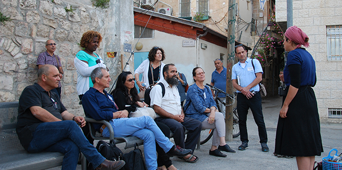

On May 16 2017, the Graduate Unit’s Seminar on Immigration, Migration, and Refugees convened for the fourth time. The study day included visits to the Mikveh Israel School, the Tech-Career NGO in Lod, and the Nahlaot neighborhood in Jerusalem, as well as a conversation with the chairman of the Jewish Agency for Israel, Mr. Natan Sharansky.
The study day opened with a visit to the Mikveh Israel agricultural youth village, where the fellows learned about the model of educational integration that was developed to serve the diverse groups of students who attend the institution. They visited the boarding facilities for French students, where they heard about the tensions between French culture and Israeli culture, and how the integrated educational model helps immigrant youth from France develop the ability to move between the two. They also learned about the organizational changes implemented to promote academic excellence in the students, visited the boarding facilities for the religious school, and heard about the institution’s educational village from the director of the youth village.

The visit to Mikveh Israel was arranged with the help of Yehuda Mimran, the CEO of Alliance Israelite Universelle (Kol Israel Haverim or KIAH), who is himself a graduate of Cohort 3 of the Mandel School for Educational Leadership.
The graduates also met with Mutasim Ali, the only asylum seeker from Sudan who has been granted refugee status in Israel, who is now a law student at the Ramat Gan College of Law and Business. Mutasim presented his own personal story of migration and his experience as a refugee.
Next, the graduates traveled to Lod, where they visited the Tech-Career NGO and learned about their model for integrating Ethiopian-Israeli students into high tech, in a meeting with students taking part in the training process.
Moving on to Jerusalem, the group met with Jewish Agency Chairman Natan Sharansky, a former Soviet “refusenik” and prisoner of Zion, who was later an Israeli politician and government minister. Mr. Sharansky shared his personal story and his vision for the organization he leads. Ms. Amira Aharonovich, deputy director general of the Jewish Agency and a graduate of Cohort 22 of the Mandel School for Educational Leadership, also participated in the meeting.
The study day continued with a tour of the Nahlaot neighborhood and Mahane Yehuda market in Jerusalem, where the participants learned about the history of successive waves of immigration to Israel. They examined the “melting pot” approach that characterized the policy for immigrant absorption in the early years of the State of Israel, and learned about the diverse range of populations who form Israel’s social mosaic via different ethnic foods, and conversations with actors who played figures from local history and folklore.
The day concluded at the Lev Hair community administration, which is directed by Eyal Shely, a graduate of Cohort 1 of the Mandel Program for Young Educational Leadership in the Periphery. The participants reflected on the day’s experiences and received an update about the upcoming visit scheduled as part of the seminar: a study trip to Macedonia.
{kind=link}